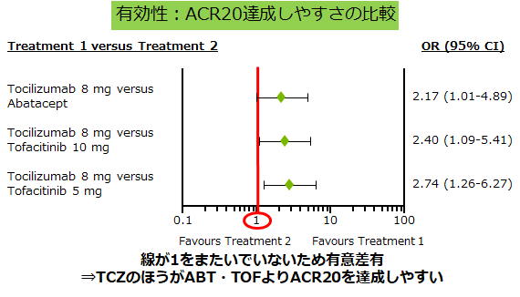
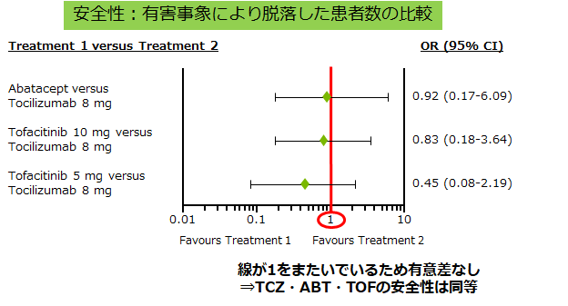

2nd-Lineのメタアナリシスの結果、TCZはABT・TOFに比べ有意にACR20達成率が高かった
- ●RA患者への生物学的製剤とトファチニブの有効性と安全性を評価する。
- ●TCZ・RIT・ABT・TOFのTNF効果不十分例に対する無作為化試験(RCTs)をBayesian netwaork meta-analysisで評価した。
- ●4つのRCTsの1796名の患者を対象にACR20を比較。
- ●TCZはABT・TOFに比べ有意にACR20を達成した。
- ●有害事象に差はなかった。


2nd-Lineの薬剤選択は、ABT・TOFに比べ有効性が高く、安全性が同等なアクテムラである
Lee YH.et al;Int J Rheum Dis. 2015 Dec 22.. doi: 10.1111/1756-185X.12822. [Epub ahead of print]